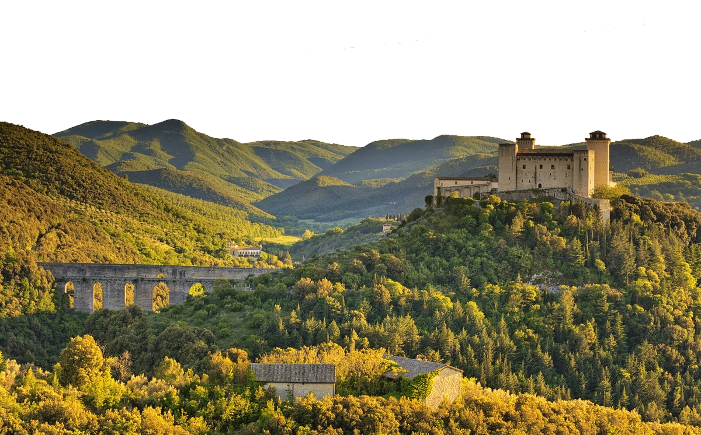

Julius Caesar arrived to England with his Roman Army during his Gallic Wars in 54 BC, landing on the beaches in KENT. The Romans introduced vegetables and herbs previously unknown to the Britons (garlic, olives, asparagus, rosemary, thyme, basil, parsley, dill and coriander). An enormous number of amphoras filled with olive oil came by ship from the Mediterranean colonies. HORTUS TANATUM (Latin definition for Thanet’s garden) takes inspiration from the Roman agricultural system and culinary traditions importing in Thanet the best Italian Single Estate Extra Virgin Olive Oil.
Italy's green heart, Umbria is a land unto itself, the only Italian region that borders neither the sea nor another country. The landscape, which includes olive groves on the slopes between Assisi and Spoleto, was approved by FAO as the first Globally Important Agricultural Heritage System in Italy (GIAHS). This extraordinary terrain has been shaped by the ancient interaction of farmers with the unspoiled natural environment. An Apennine scenery of fifteen thousand rocky acres of Moraiolo, Frantoio and Leccino olive trees and old mills, situated between 350 and 500 metres above sea level.
The Melchiorri family have been making extra-virgin olive oil since they acquired the Madonna di Lugo Estate in the late 18th Century. At the time of the Papal State at first it was an artisan production, each subsequent generation used modern techniques to perfect the art of making supreme olive oil fit for the most prestigious restaurants and discerning of clients. With its ancient olive groves, the single estate is situated on the historic slopes of Assisi and Spoleto. The Melchiorri oil is unfiltered and produced in small quantities. It is well-known for its low levels of acidity, never greater than 0.2% and the very high amount of health protective antioxidants called polyphenols (between 400 and 600 mg/kg). Definitely one of the best in the world.
Davide Lonardi of Acetaia San Donnino, Modena, is a third generation producer of traditional balsamic vinegar. Umberto, Davide’s grandad, started the family production in 1947, when he purchased the property, fabulous example of Liberty style, from the Lieutenant Claudio San Donnino. He was surprised to find old barrels of balsamic vinegar left behind in the attic. Deciding to honour the San Donnino family, he continued the tradition of making traditional balsamic vinegar. The old barrels are still being used in production today. The oldest dates back to 1512. Villa San Donnino was used as the back drop for Bertolucci’s movie “1900” with Robert De Niro. The only ingredient in traditional balsamic vinegar is grape must, the pure juice from Trebbiano or Lambrusco grapes. When grapes are ready they are harvested and pressed to extract their must, which is cooked very slowly for 24 hours. Then it is put into a line of barrels made of different types of wood for aging 6, 12, 25 or 100 years. Davide obtains his balsamic vinegar only from cooked grape that is allowed to mature by natural fermentation without adding any sugar, food colouring or aromatic substances. Acetaia San Donnino villa has reached the ears of beloved celebrities like 007 actor Pierce Brosnan and Facebook creator Mark Zuckerberg. Both separately made several trips to the villa and Brosnan bought few barrels producing his own vinegar under Davide’s supervision. A small bottle of San Donnino vinegar contains the love and the immense patience of his producer.